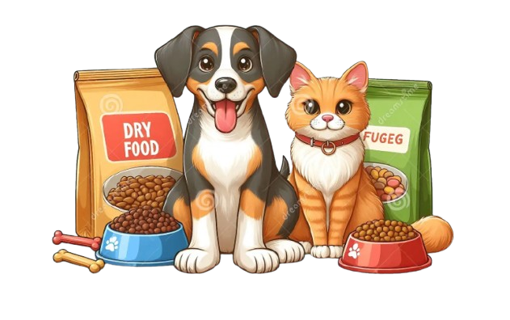

About Us
pure love’s opened on Thanksgiving Day 2005. Owner Ron Silver began import and selling them to pet lovers and his neighbors out of a small store at the corner of Hudson and North Moore St. in Tribeca. Today, the beloved pet store celebrates its 27th year anniversary.
